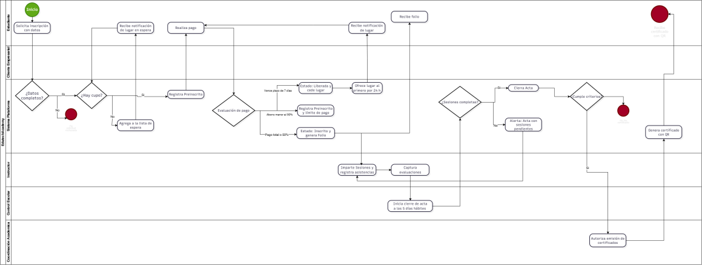

Materia: Componentes de Lógica de Negocio | Equipo: #15 | Grupo: 004
Catedrático: M.C. Jorge Alejandro Lozano González / M.C. Miguel Ángel Gómez Marroquín
| Integrante | Matrícula | Rol en el PIA | Responsabilidades Principales |
|---|---|---|---|
| Samuel Alejandro Casaos Esquivel | 2226784 | Persona 1 | Análisis de Negocio, Documentación y Trazabilidad: Elaboración del BRD, Glosario del Lenguaje Ubicuo, Historias de Usuario con Gherkin, Modelado BPMN y Matriz de Trazabilidad End-to-End. |
| Josue Emiliano Diaz García | 2226766 | Persona 2 | Arquitectura de Software, Dominio DDD y Patrones: Entidades, Value Objects, Patrón Specification, Máquina de Estados Finita, Justificación de Principios SOLID y 11 ADRs. |
| Maximiliano Romero García | 2226867 | Persona 3 | API REST, Infraestructura, QA, DevOps y Despliegue: FastAPI, OpenAPI/Swagger UI, Suite de Pruebas Automatizadas con pytest (≥80%), Docker Compose, CI/CD en GitHub Actions y Despliegue en Render. |
Evans, E. (2003). Domain-driven design: Tackling complexity in the heart of software. Addison-Wesley.
Facultad de Ingeniería Mecánica y Eléctrica. (2026). PIA: Proyecto integrador de Componentes de Lógica de Negocio [Material didáctico]. Universidad Autónoma de Nuevo León.
Fowler, M. (2002). Patterns of enterprise application architecture. Addison-Wesley.
Evans, E., & Fowler, M. (s. f.). Specifications. Martin Fowler. https://martinfowler.com/apsupp/spec.pdf
FastAPI. (s. f.). FastAPI documentation: Interactive API docs with Swagger UI & ReDoc. https://fastapi.tiangolo.com/
GitHub. (s. f.). GitHub Actions documentation: Automate your workflow from idea to production. https://docs.github.com/actions
Martin, R. C. (2017). Clean architecture: A craftsman's guide to software structure and design. Prentice Hall.
Object Management Group. (2014). Business Process Model and Notation (BPMN) versión 2.0.2. https://www.omg.org/spec/BPMN/2.0.2/
Render. (s. f.). Render documentation: Blueprints (render.yaml) & Web Services. https://render.com/docs/blueprint-spec
SQLAlchemy Authors. (s. f.). SQLAlchemy 2.0 documentation: Core and Transactions. https://docs.sqlalchemy.org/
Wiggins, A. (2017). The twelve-factor app. https://12factor.net/
Convertir el análisis y el diseño de EduTech Academy desarrollados en las Unidades 2 y 3 (BRD, User Stories, BPMN, glosario, modelo de dominio y casos de uso CU-01 a CU-05) en una solución de software funcional, verificable y desplegada en producción. La solución implementa Clean Architecture y Domain-Driven Design (DDD), aísla las políticas con el Specification Pattern y una Máquina de Estados Finita con Domain Events, expone una API REST en FastAPI documentada con OpenAPI, maneja transacciones atómicas bajo el patrón Unit of Work, y se valida con pruebas automatizadas (≥80% de cobertura), integración continua (GitHub Actions), Docker Compose y despliegue funcional en Render.
| Entregable Oficial | Ubicación / URL de Acceso | Descripción y Contenido |
|---|---|---|
| Repositorio GitHub | https://github.com/SamuelAlejandro7/EduTechAcademy |
Código fuente completo, tests, CI/CD, Docker, scripts y documentación README. |
| Panel para el Usuario | https://edutech-academy-api.onrender.com/panel |
Interfaz web para formalizar órdenes, registrar pagos, revisar cupos y folios. |
| API Swagger UI | https://edutech-academy-api.onrender.com/docs |
Documentación OpenAPI interactiva para pruebas de endpoints y contratos JSON. |
| Especificación OpenAPI | docs/api/openapi.json |
Especificación formal exportada automáticamente en el pipeline de CI/CD. |
EduTech Academy opera en el giro de capacitación tecnológica profesional continua (Cloud, Ciberseguridad, Inteligencia Artificial, Ciencia de Datos). Sus ingresos se dividen en inscripciones individuales (B2C) y convenios empresariales con cohortes corporativas (B2B). En el modelo previo basado en hojas de cálculo de Excel y correos electrónicos se identificaron cuellos de botella severos:
| Actor | Responsabilidades en el Negocio | Rol / Endpoint en la API |
|---|---|---|
| Estudiante | Solicita inscripción, paga anticipo (≥50%), consulta estado y verifica su certificado con folio único. | Panel Web / Endpoints públicos |
| Instructor | Imparte clases, registra asistencias dentro de 48 h y captura evaluaciones ponderadas. | inst-1, inst-2 (vía cabecera X-Usuario) |
| Control Escolar | Corrige asistencias excepcionales, consolida notas y ejecuta el cierre definitivo de actas. | ce-1 |
| Coordinación Académica | Autoriza la emisión oficial de certificados y avala modificaciones extraordinarias. | coord-1 |
| Sistema Contable / LMS | Notifica acreditación bancaria de pagos y sincroniza logs de participación virtual. | Puertos de Integración / Adapters |
| Empleador / Tercero | Verifica la autenticidad de certificados sin requerir autenticación ni acceso a datos personales. | GET /verificacion/{folio} |
| ID | Rol | Necesidad | Regla | Componente / Endpoint | Estado |
|---|---|---|---|---|---|
| US-01 | Estudiante | Registrar solicitud en estado SOLICITADA. | REG-01 / RN-11 | Operacion / POST .../solicitar |
Sí (100%) |
| US-02 | Estudiante | Conocer criterio y confirmar con anticipo ≥ 50%. | INV-02 / RN-01 | AnticipoMinimoCubierto / POST .../pagos |
Sí (100%) |
| US-03 | Estudiante | Consultar cupos disponibles en tiempo real. | INV-03 / RN-10 | RecursoFormativo / GET /cursos |
Sí (100%) |
| US-04 | Estudiante | Inscribirse a grupo (lista de espera si cupo lleno). | REG-01 / INV-04 | puede_inscribirse / POST .../inscripciones |
Sí (100%) |
| US-06 | Estudiante | Plazo de pago a 3 días y liberación automática. | INV-09 / RN-16 | siguiente_estado / POST .../vencimiento |
Sí (100%) |
| US-11 | Instructor | Registrar asistencia docente en ventana de 48 h. | INV-11 a 13 / RN-02 | POST .../asistencias |
Sí (100%) |
| US-12 | Instructor | Capturar calificaciones numéricas válidas (0-100). | INV-14 a 17 / RN-03 | POST .../evaluaciones |
Sí (100%) |
| US-13 | Control Escolar | Consolidar desempeño y cruce de elegibilidad. | INV-19, 20 / RN-02 | ConsolidadorDeActa (Domain Service) |
Sí (100%) |
| US-15 | Control Escolar | Cerrar acta a los 5 días y generar certificados. | INV-18, 22 a 25 | Acta.cerrar() / POST /certificados |
Sí (100%) |
| US-19 | Empleador | Validar certificado público con folio/QR sin login. | REG-02 / RN-06 | GET /verificacion/{folio} (CQRS) |
Sí (100%) |
| US-21 | Sistema | Validar precondiciones de orden (puede_procesarse). |
RN-11 | PuedeProcesarseSpecification |
Sí (100%) |
| US-22 | Sistema | Beneficio VIP 15% (beneficio_referencia). |
RN-12 | BeneficioReferenciaSpecification |
Sí (100%) |
Given el aspirante selecciona un curso habilitado con cupo disponible.When envía su solicitud con alumno activo, líneas ≥ 1 y aval administrativo.Then la especificación puede_procesarse devuelve True y el estado pasa a ACEPTADA.tests/test_api.py::test_registrar_solicitud_exitosa (HTTP 201).
El proceso de negocio de EduTech Academy organiza el ciclo integral de capacitación en carriles (swimlanes) por actor: Estudiante, Sistema Transaccional, Instructor, Control Escolar y Coordinación Académica. Abarca desde la solicitud inicial con validación de precondiciones (puede_procesarse), control de cupo con lista de espera, ventana de pago de 3 días con anticipo del 50%, registro docente en 48 horas, consolidación y cierre de acta a los 5 días hábiles, hasta la emisión y verificación pública del certificado oficial con código QR y folio irrepetible.

Figura 1. Modelo de Procesos de Negocio BPMN 2.0: Ciclo integral de inscripción a certificación.
| Término de Negocio | Significado Conceptual | Mapeo en el Código Fuente |
|---|---|---|
| Preinscrito | Solicitud inicial registrada con lugar reservado, pendiente del anticipo del 50%. | EstadoOperacion.SOLICITADA |
| Inscrito | Pago de al menos el 50% acreditado formalmente; genera folio único irrevocable. | EstadoOperacion.INSCRITA, folio INS-... |
| Liberada | El cupo reservado se desestima y devuelve al catálogo por impago o cancelación. | EstadoOperacion.CANCELADA |
| Acta | Consolidación grupal de calificaciones y asistencias; una vez cerrada es inmutable. | Acta (Aggregate Root) |
| Criterio de Certificación | Políticas de corte (Regular: 70 y 80%; Oficial: 80 y 90%). | Value Object CriterioDeCertificacion |
| Folio Único / QR | Identificador alfanumérico irrepetible para consulta pública sin sesión. | Entidad Certificado (folio, codigo_qr) |
El sistema aplica una separación estricta en 4 capas concéntricas con la regla de dependencia apuntando al Dominio:
src/Domain/): Contiene las entidades, value objects, specifications y máquina de estados. No importa FastAPI, SQLAlchemy ni librerías de infraestructura externa.src/Application/): Orquesta casos de uso (ServicioOperaciones) y define puertos y comandos DTO. Coordina las transacciones sin contener reglas de negocio.src/Infrastructure/): Implementa los repositorios (PostgreSQL 16 y SQLite en memoria) y adaptadores de notificación y carga CSV.src/Api/): Controladores FastAPI que convierten solicitudes HTTP a comandos de aplicación y gestionan respuestas amigables en español.| Elemento DDD | Clases / Componentes | Función en el Sistema |
|---|---|---|
| Aggregate Roots | Operacion, Grupo, Inscripcion, Acta, Certificado, RecursoFormativo |
Unidades de consistencia transaccional e invariantes del ciclo formativo. |
| Entities | Actor, LineaOperacion, RegistroEnListaDeEspera |
Objetos de negocio con identidad persistente (actor_id, recurso_id). |
| Value Objects | Dinero (con Decimal), Cantidad, EstadoOperacion, CriterioDeCertificacion |
Inmutables sin identidad propia. Dinero bloquea flotantes y garantiza precisión. |
| Domain Services | ConsolidadorDeActa, CalendarioDeDiasHabiles |
Operaciones que involucran múltiples agregados (cálculo de plazos y consolidación). |
| Domain Events | OperacionAceptada, OperacionInscrita, BeneficioReferenciaOtorgado, OperacionCancelada |
Notificaciones de hechos consumados persistidos exitosamente. |
| Specifications | PUEDE_PROCESARSE, BENEFICIO_REFERENCIA, PUEDE_INSCRIBIRSE |
Reglas combinables con &, | y ~ con soporte de explicabilidad diagnóstica. |
| Patrón | Dónde vive en el Código | Justificación Técnica |
|---|---|---|
| Aggregate | src/Domain/entities.py |
Protege las invariantes transaccionales (cupos, subtotales, eventos). |
| Specification | src/Domain/specifications.py |
Reglas combinables con operadores booleanos que además diagnostican el motivo de fallo. |
| State Machine | src/Domain/state_machine.py |
Controla el ciclo de vida y bloquea estados ilegales o saltos fuera de orden (HTTP 409). |
| Unit of Work | src/Application/ports.py |
Garantiza atomicidad transaccional completa (COMMIT) o reversión íntegra (ROLLBACK). |
| CQRS | src/Application/dto.py y Api/ |
La verificación pública de certificados lee un DTO plano ligero sin exponer el agregado ni datos personales. |
| Strategy | CriterioDeCertificacion |
Permite alternar entre criterios Regular u Oficial según el tipo de curso sin condicionales dispersos. |
| Principio | Implementación Real en el Código Fuente |
|---|---|
| S — Responsabilidad Única | El cierre de acta se reparte: ServicioOperaciones orquesta, ConsolidadorDeActa arma líneas, CalendarioDeDiasHabiles valida plazos y Acta resguarda sus invariantes. |
| O — Abierto / Cerrado | La regla de beneficio VIP (BENEFICIO_REFERENCIA) se incorporó con clases nuevas (ActorPreferente, TotalMinimo, PromocionActiva) sin alterar la clase base Specification. |
| L — Sustitución de Liskov | Las reglas combinadas (And, Or, Not) implementan is_satisfied_by(ctx) igual que las reglas simples; los repositorios en memoria (fakes.py) reemplazan a los de PostgreSQL sin fricción. |
| I — Segregación de Interfaces | Interfaces compactas: ActorRepository solo tiene obtener(); RecursoRepository tiene obtener() y guardar(); PublicadorEventos solo tiene publicar(). |
| D — Inversión de Dependencias | Los servicios de aplicación dependen de interfaces abstractas en su constructor; src/Domain/ no tiene ninguna importación de frameworks ni persistencia externa. |
# src/Domain/specifications.py
PUEDE_PROCESARSE = (
ActorActivo() & OperacionConLineas() & OperacionAutorizada()
) # AND estricto: requiere alumno activo, líneas >= 1 y autorización
BENEFICIO_REFERENCIA = (
ActorPreferente() & TotalMinimo(Decimal("1500")) & ~PromocionActiva()
) # NOT: prohíbe duplicidad de promociones comerciales
Cuando una orden se rechaza, la función explicar() reporta la condición precisa insatisfecha:
«No se puede formalizar la solicitud EDU-O033: el estudiante está dado de baja.»
| Código HTTP | Significado | Ejemplo Real en EduTech Academy |
|---|---|---|
| 200 / 201 | Éxito / Recurso creado | {"codigo": "OPERACION_SOLICITADA", "mensaje": "Operación creada exitosamente en estatus SOLICITADA."} |
| 202 | Grupo lleno | {"mensaje": "Grupo lleno: el estudiante ha quedado registrado en lista de espera."} |
| 400 | Petición mal formada | {"mensaje": "El dato 'cantidad' debe ser mayor o igual a 1."} |
| 403 | Sin el rol necesario | {"mensaje": "El usuario ce-1 no tiene permiso para esta acción; se requiere rol Instructor."} |
| 404 | No existe | {"mensaje": "No existe el registro con ID 'EDU-O999'."} |
| 409 | Conflicto de estado | {"mensaje": "No se puede formalizar la solicitud porque está en estado INSCRITA."} |
| 422 | Regla incumplida | {"mensaje": "No se puede formalizar la solicitud EDU-O013: la operación no tiene cursos asociados."} |
Ejecutados a través de scripts/ejecutar_casos_pia.py:
| Archivo del Paquete | Total Casos | Resultados Obtenidos en el Motor del Dominio |
|---|---|---|
| casos_prueba.csv | 120 |
60 validaciones (puede_procesarse): 46 procesables y 14 rechazadas (7 sin autorización, 5 con alumno inactivo y 2 sin líneas formativas). 60 evaluaciones de beneficio (beneficio_referencia): 10 aplican el 15% VIP; 50 no aplican por no ser preferentes o poseer promoción previa. |
| transiciones_prueba.csv | 20 |
completar: 3 Concluido y 1 rechazada (sin autorización). cancelar: 4 Liberada (CANCELADA). repetir_aprobacion: 4 rechazadas (2 con 409 por transición inválida y 2 no procesables). saltar_estado: 4 rechazadas (409) al violar la secuencia permitida. aprobar: 4 transitadas exitosamente a ACEPTADA. |
Se utiliza PostgreSQL 16 en producción y Docker, y SQLite en memoria para tests rápidos. SqlUnitOfWork asegura que si al tramitar una orden el segundo curso no tiene cupo, la reserva del primero se revierte completamente (Rollback), evitando estados a medias. Los importes son inmutables con escala fija Decimal (RNF-05).
| Nivel de Prueba | Archivos de Prueba | Pruebas | Cobertura |
|---|---|---|---|
| Unitarias (Dominio Puro) | test_operacion.py, test_specifications.py, test_state_machine.py, test_value_objects.py |
80+ | 100% de la lógica pura |
| Integración y Servicios | test_servicios.py, test_reglas_negocio.py, fakes.py |
230+ | Servicios y UoW |
| API REST (E2E) | test_api.py (FastAPI TestClient) |
26 | Códigos HTTP y contratos |
| TOTAL COMBINADO | Suite global pytest | 340+ | > 98% (Exigido: ≥ 80%) |
.github/workflows/ci.yml): Ejecuta linting con Ruff, valida las pruebas unitarias y de integración sobre Python 3.10, y exige una cobertura mínima de código del 80% (--cov-fail-under=80).render.yaml. El endpoint de salud en producción confirma estado óptimo:
GET https://edutech-academy-api.onrender.com/salud
{"estado": "ok", "entorno": "produccion", "baseDeDatos": "postgresql", "solicitudes_activas": 60}| Paso | Acción (Panel o Swagger UI) | Qué Demuestra ante el Docente |
|---|---|---|
| 1 | Reiniciar datos de demo (POST /demo/reiniciar) |
Carga limpia de los 140 casos provistos por la cátedra. |
| 2 | Revisar solicitud VIP EDU-O001 |
Evaluación de precondiciones y aplicación del 15% de descuento VIP. |
| 3 | Formalizar EDU-O001 dos veces seguidas |
Primera petición responde 200; la segunda responde 409 por regla de la Máquina de Estados. |
| 4 | Formalizar EDU-O013 y EDU-O033 |
Responde 422 diagnosticando: "solicitud sin cursos" y "alumno dado de baja". |
| 5 | Inscribir a grupo y abonar anticipo del 50% | Transición exitosa a INSCRITA, reserva de vacante y emisión de folio único. |
| 6 | Registrar asistencia con usuario ce-1 |
Responde 403 Forbidden demostrando el control de acceso por roles docentes. |
| 7 | Cierre de acta, emisión y verificación | Cierre de acta grupal, emisión de certificado con QR y verificación pública (CQRS). |
| Requerimiento | User Story | Regla / Invariante | Componente de Dominio | Endpoint API | Prueba Automatizada |
|---|---|---|---|---|---|
| RF-01: Catálogo | US-01 | INV-01 | RecursoFormativo |
GET /cursos |
test_operacion.py |
| RF-02: Solicitud | US-01 | REG-01 / RN-11 | Operacion |
POST .../solicitar |
test_api.py::test_registrar_solicitud_exitosa |
| RF-03: Procesabilidad | US-21 | RN-11 | puede_procesarse() |
Validación interna | test_specifications.py |
| RF-04: Descuento VIP | US-22 | RN-12 | beneficio_referencia() |
POST .../beneficio |
test_api.py::test_evaluar_beneficio_vip_exitoso |
| RF-05: Anticipo 50% | US-02 | RN-01 | AnticipoMinimoCubierto |
POST .../pagos |
test_servicios.py |
| RF-06: Vencimiento 3d | US-03, 06 | RN-16 | siguiente_estado() |
POST .../vencimiento |
test_state_machine.py |
| RF-07: Cupos | US-03, 04 | RN-10 / INV-03 | RecursoFormativo.reservar |
POST .../inscripciones |
test_operacion.py |
| RF-08: Asistencia | US-11 | INV-11 / RN-02 | AsistenciaRegistrada |
POST .../asistencias |
test_servicios.py |
| RF-09: Evaluaciones | US-12, 13 | RN-03 / INV-14 | ConsolidadorDeActa |
POST .../evaluaciones |
test_servicios.py |
| RF-10: Cierre de Acta | US-14, 15 | INV-18 a 22 | Acta.cerrar() |
POST .../acta/cierre |
test_servicios.py |
| RF-11: Certificado | US-15, 20 | RN-06 / INV-25 | Certificado, Folio |
POST /certificados |
test_api.py |
| RF-12: Verificación | US-19 | REG-02 | Vista CQRS Certificado | GET /verificacion/{folio} |
test_api.py |
El desarrollo del presente Producto Integrador de Aprendizaje (PIA) demostró la efectividad práctica de aplicar Domain-Driven Design (DDD) y Clean Architecture en sistemas transaccionales con alta densidad normativa: